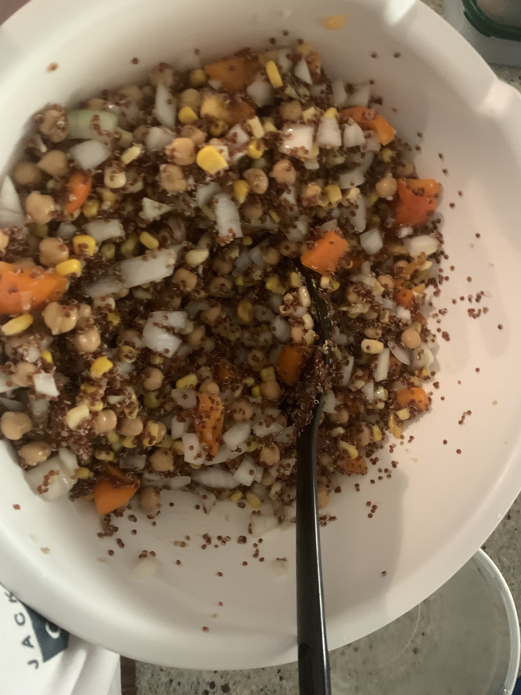

Quinoa Salad

Description
This is a nutritious salad that will leave
you feeling energized for the day. I like
to bring this daily during weekdays for my
lunches at work.
Ingredients
Part 1 Ingredients
- 1 Cup of Quinoa
- 2 Cups of Water Dependant on
type of quinoa used (eg whole
grain or white)
- Prepare a large bowl that you
be able to mix all of the ingredients
in. Be aware that the quinoa
will absorb the water and expand
when finding an appropriately
sized bowl.
Part 2 Ingredients
- 2 Garlic Cloves
- 1 Bell Pepper (Red, Yellow,
or Orange as green is too bitter
in taste)
- 1 Red Onion (if red onions are
out of season, then sweet onions
can be used for similar flavour)
- 1 Can of Corn Niblets (341 mL)
- 1 Can of Chick Peas (540 mL)
- 1/4 Cup of Olive Oil
- 1/4 Cup of Lemon Juice (Can adjust
to preferred flavour/acidity)
- 2 Tbsp of Vinegar
Instructions
Part 1
- Prepare quinoa. I mix the quinoa
and the water before waiting for the
water to begin to boil. This way I can
proceed to Instructions Part 2 while I
prepare the rest of the salad or
prepare other meals while it boils.
- Once quinoa has absorbed all of the
water, move the quinoa to a large mixing
bowl. We will use this to combine and mix
all of the ingredients.
Part 2
- Mince your 2 cloves of garlic. The finer
they are miced, the stronger the garlic
flavour you will notice
- Dice the onion into small 1cm cube
- Cut the pepper up into 1-2cm cubes
- Combine the garlic, onion, and pepper
with the quinoa and mix in the mixing
bowl.
- Pour in the olive oil, vinegar, and
lemon juice into the mixing bowl.
- Salad can be served immediately,
or stored for up to 5 days.
Home